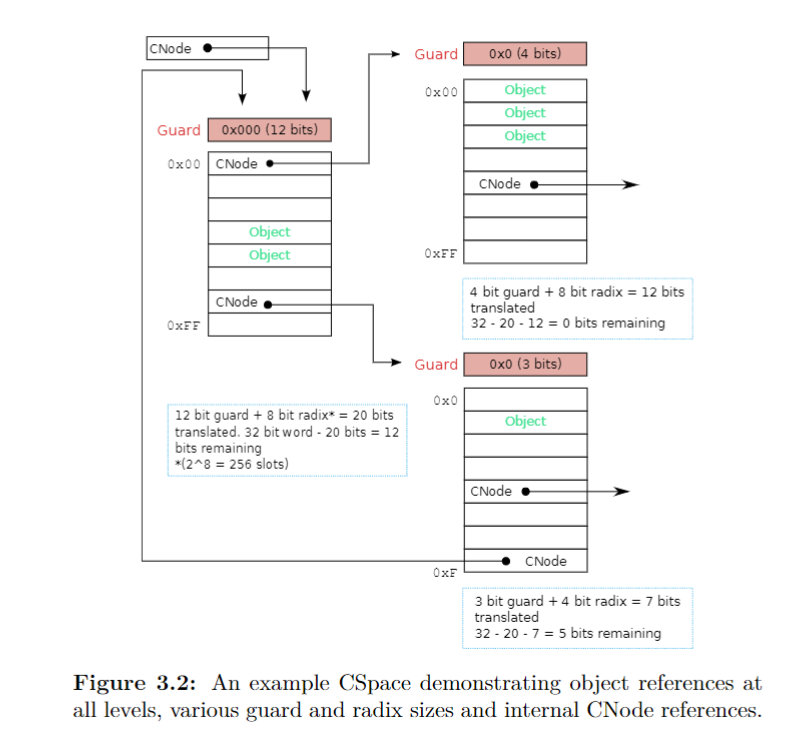
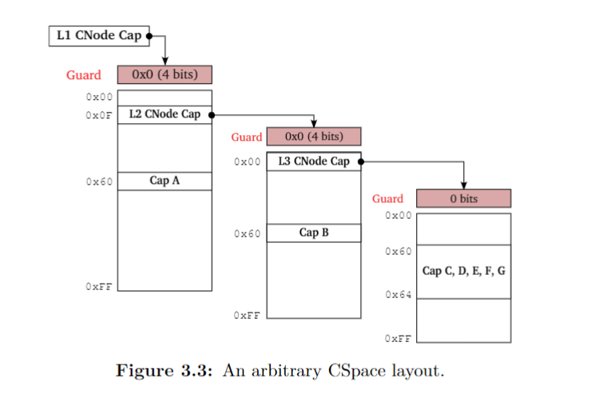

本文是学习 seL4 时的一些笔记。
概述
- 宏内核的特权模式很危险，会造到特权升级攻击
- Linux 大概有 10000 个 bug
- Linux 的可信计算基很大
- seL4 代码只有 10000 行，因此攻击面更小
- 微内核只是对硬件的简单包装，仅能安全地对硬件进行复用
- 微内核提供的更多是隔离
- 关键是，seL4 提供了受保护的过程调用机制（IPC），使程序可以调用其他程序的函数。函数只能在被导出的 entrypoint 调用，被显式授权的客户端
- IPC 不是传送数据或同步活动的机制
- IPC 是用户控制的上下文切换。具体地讲，用户可以不调用调度器的情况下切换到不同的线程，并携带一定量的数据。
- IPC 是实现跨域函数调用的 seL4 机制
- seL4 利用 IPC 来实现宏内核提供的服务，这些服务就是程序，跑在自己的沙箱里，然后提供 IPC 接口供应用调用
- 可以避免 29% 的 critical 危机，55% 的将不再为 critical
- seL4 同时是一个虚拟机监控器
seL4 证明
- seL4 验证核心是功能正确性证明
- 内核的功能有形式化规范，称为抽象模型
- C 代码的行为是抽象规范允许的行为的子集
- 但是编译器可能将其编译为有 bug 的二进制文件。所以需要证明二进制是 C 代码的正确翻译，把 C 代码和编译后的二进制都转化为数学描述，看它们描述的功能是否相同
安全属性
- 保密性：seL4 不允许实体去读没有显示授读权限的文件
- 完整性：seL4 不允许实体去写没有显式授写权限的文件
- 可用性：seL4 不允许一个实体去阻止另一个实体的已授权的对资源的使用
证明假设
- 硬件按预期运行
- 规范 matches 预期：可以转移到对安全属性的说明上
- 定理证明器是正确的
能力
- 能力是一个对象的引用，和指针类似（通常成为胖指针）。它们是不可修改的指针，因为能力会始终指向同一个对象。能力也编码访问权限，实际上能力是对象引用和它传达给对象的权限的封装。调用能力是对一个系统对象实时操作的唯一方式。
- 嵌在能力中的对象引用指向对象的一个接口，并表达调用该函数的权利
- 能力可以同时表达传另一个能力作为函数参数的权力（委任这个组件去使用传进去的能力参数的对象引用）
- 授予对象的权力可以被限制在它的最小集
- seL4 的能力与 linux 的能力不同。linux 能力实际上是系统调用粒度的访问控制列表，有混淆代理人问题
- 有 10 种类型的 seL4 对象
- 端点 Endpoints，用于执行受保护的系统调用
- Reply Objects，表示受保护的过程调用的返回路径
- Address Spaces，提供组件的沙箱（硬件页表的封装）
- Cnodes，存储代表一个组件的访问权限的能力
- 线程控制块，表示执行的线程
- 调度上下文，代表在处理器上使用一个时间片的权利
- 通知，是同步对象（与信号量相似）
- 帧，表示可以映射到地址空间的物理内存
- 中断对象，提供对中断处理的访问
- 空类型，未使用的（自由的）物理内存，可以转换为任意其他类型
为什么使用能力
细粒度访问控制，与 ACL 形成对比。 - ACL 的权限控制是基于用户的，粗粒度。如用户想运行一个程序，却不希望其拥有某些权限（confinement），这是没有 clean 的实现的。 - 能力提供了面向对象的访问控制形式。对内核而言，当且仅当客体拥有对应的能力时，操作才被允许。
中介与授权
- 中介：Alice 被授予一个能力，她并不知道这个对象是什么，她只能调用这个对象的方法。因此可使用这个特性进行安全检查、包过滤、信息流跟踪、透明调试、懒加载对象等
- 安全授权：Alice 可以为她的一个对象创建一个能力，并将其交给 Bob，这样 Bob 就可以访问该对象了。且该能力可随时摧毁。ACL 模型无法安全且轻松地完成。
Confused deputy
ACL 无法解决的问题。Alice 可以调用一个程序，该程序具有她不具有的权限。
系统调用
可以认为系统提供了三种系统调用：send，receive 和 yield。其余的是它们的组合和变体。
seL4_Yield ()：是唯一不需要引用能力的系统调用。让出调用线程的剩余时间片，交给内核调度器去调度。如果没有与调用线程优先级相同且可运行的线程，则该线程立即以新的时间片被重新调度。seL4_Send ()：引用指定的能力发送消息。如果引用的是端点能力，并且没有接收方准备好立即接收消息，则发送线程将阻塞直至可交付。接收对象不会进行响应。seL4_Recv ()：线程通过端点或通知对象接收消息。如果没有正在等待的发送方或通知信号，则调用方将阻塞直到有消息或通知可以接收为止。仅用于端点或通知能力。seL4_NBSend ()：在端点上非阻塞发送。若不能立即传递，即没有接收方在目的端点处等待，则丢弃消息。seL4_NBRecv ()：用于非阻塞地接收通知对象上挂起的信号或等待发送的消息，仅用于端点或通知能力。seL4_Call ()：是seL4_Send ()和seL4_Recv ()的组合，将阻塞发送线程直到消息传递到接收方并收到了接收方的回复。seL4_Reply ()：用于接收方响应seL4_Call ()调用seL4_ReplyRecv ()：是seL4_Reply ()和seL4_Recv ()的组合
内核对象
CNodes存储多个能力，许可线程调用特定对象的方法。每个CNode有多个slots，总是 2 的整数幂。- 线程控制块
- 调度上下文
- 端点促成了线程间的消息通信。IPC 是同步的：发送或接收会阻塞至可以传递。
能力空间
- 一个线程的能力空间是其根 CNode 能力开始可到达的有向图组成的空间。
相关数据结构
CNode
1 | ```c |
CNode 也是一个内核对象，也有对应的能力。下面是对应的结构体：
capCNodeGuard：具体的 guard 数值；capCNodeGuardSize：guard 占的位数；capCNodeRadix：CNode 的 slot 号的位数；capCNodePtr：指向 CNode 的指针；
seL4 权限抽象
在 seL4 中，任何操作都由能力授权。当对对象执行操作时，需要将相应的能力传递给内核，然后内核会检查该能力是否有足够的权限来执行该操作。能力本身是存储在内核内存空间中（在 Cnodes 里），用户模式通过引用其在线程的 Cspace 中的位置来引用能力。
名词解释
- 端点（endpoint）：允许线程间发送消息，调用端点对象可以发送和接收消息。端点上有一队线程在等待接收或发送消息
- CSlot：存储单个能力，也可能没有存储
- CNode：CSlot 数组
- CSpace：一个线程拥有的所有能力的集合
- TCB：线程控制块，包含：
- 优先级
- 寄存器状态和浮点数上下文
- 能力空间
- VSpace
- 发送错误消息的端点能力
- 回复能力
能力获取
线程间传递消息时，消息中可能包含能力，这些能力将被复制到接收方，前提是发送线程引用的端点能力具有 Grant 权限。发送的能力在线程 IPC 缓冲区的 caps 字段指定，接收方要指定它希望接收能力的 slot。
能力管理
能力管理大部分通过调用 CNode 方法实现。当创建一个 CNode 时，用户需要指定它拥有的 slot 数量，一个 slot 可以存放一个能力。CNode 支持以下方法：
seL4_CNode_Mint ()：在指定的 slot 中从一个已有能力创建一个新能力。新能力可以拥有比原来的能力更少的权限和不同的保护位。seL4_CNode_Copy ()：与seL4_CNode_Mint ()类似，但是新能力与原能力有相同的权限和保护位。seL4_CNode_Move ()：在两个指定的 slot 中移动能力。seL4_CNode_Mutate ()：可以在移动能力的同时减少能力的权限。seL4_CNode_Rotate ()：在三个 slot 中移动两个能力。具体讲，该操作将能力 a 从 slot2 移到 slot1，并把能力 b 从 slot3 移到 slot2。这里 slot1 与 slot3 可以相同，此时该方法为交换两个能力的位置。seL4_CNode_Delete ()：删除指定 slot 中的能力。seL4_CNode_Revoke ()：删除指定能力的所有孩子。seL4_Cnode_SaveCaller ()：将线程 TCB 中的 Reply 能力存储下来
能力使用
线程通过引用其能力空间的能力来发送消息。线程引用端点、通知或回复能力时，消息将通过内核传递给其他线程。引用其他类型的能力时，发送消息将被解释为方法调用（具体取决于能力的类型）。例如，引用一个线程控制块能力将会阻塞目标线程。
在非 MCS 的操作系统中，seL4 提供如下几个系统调用：
seL4_Yield ()：是唯一不需要引用能力的系统调用。让出调用线程的剩余时间片，交给内核调度器去调度。如果没有与调用线程优先级相同且可运行的线程，则该线程立即以新的时间片被重新调度。seL4_Send ()：引用指定的能力发送消息。如果引用的是端点能力，并且没有接收方准备好立即接收消息，则发送线程将阻塞直至可交付。接收对象不会进行响应（因为可能没有权限）seL4_Recv ()：线程通过端点或通知对象接收消息。如果没有正在等待的发送方或通知信号，则调用方将阻塞直到有消息或通知可以接收为止。仅用于端点或通知能力。seL4_NBSend ()：在端点上非阻塞发送。若不能立即传递，即没有接收方在目的端点处等待，则丢弃消息。seL4_NBRecv ()：用于非阻塞地接收通知对象上挂起的信号或等待发送的消息，仅用于端点或通知能力。seL4_Call ()：是seL4_Send ()和seL4_Recv ()的组合，将阻塞发送线程直到消息传递到接收方并收到了接收方的回复。seL4_Reply ()：用于接收方响应seL4_Call ()调用。用于 reply 能力，该能力存储在 TCB 中。seL4_ReplyRecv ()：是seL4_Reply ()和seL4_Recv ()的组合
能力空间寻址
如前所述，线程通过能力地址来引用能力，该能力地址指向其能力空间中的一个 slot，其中包含要引用的能力。而 CNode 存在内核空间，所以内核需要寻址。
- 将地址划分为
G+R+L位，其中G = capCNodeGuardSize，R = capCNodeRadix - 首先，内核查看其线程控制块中的根
CNode的Guard值和Guard位数，然后将地址中高G位与Guard作比较，若相等则继续，否则查找失败； - 然后将地址中接下来的
R位作为偏移，以capCNodePtr为首地址，定位到CNode中的 slot。若 slot 中为CNode能力，继续查找，地址为低L位；否则查找成功。

0x00F00060
